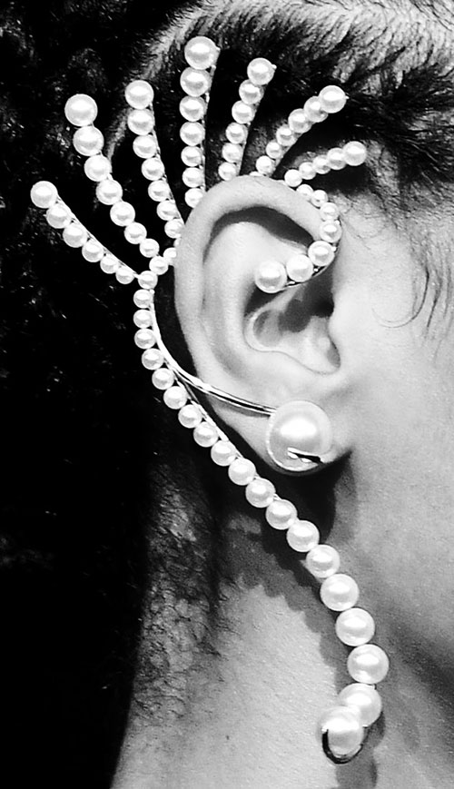
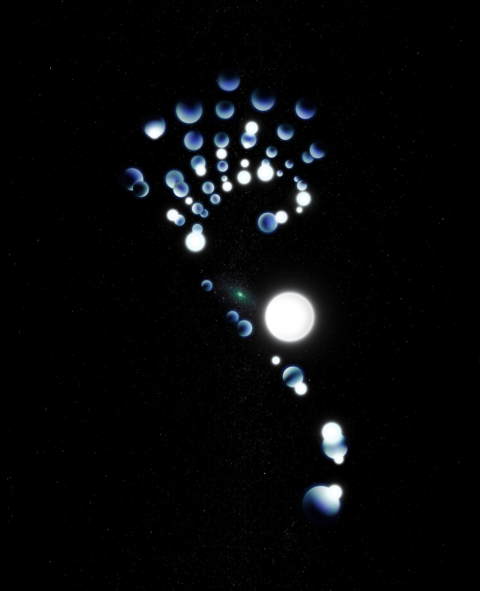

Vogue Australia / In A World Of Pure Imagination
Fashion. Image (2020)
“In a World of Pure Imagination: To reinterpret the pick of the season’s accessories, Vogue enlisted young locally based artists to make studies of imagination — theirs and designers — as a reminder of creativity’s power to transform and transport in turbulent times.” — Vogue Australia (November 2020)
In this editorial for Vogue Australia, I was invited to reimagine an earring from Prabal Gurung AW20 into an artwork that illuminates my multidisciplinary practice. Upon seeing this pearl earring, I was reminded of the striking images of colliding galaxies. As I have always been fascinated by planetary science, I sought to apply a similar tone of enigma to this composited 3D render.
The result becomes a deliberate mystique of orbiting pearls, and centrally located is Galaxy M110 — a satellite of Andromeda.
Fashion. Image (2020)
“In a World of Pure Imagination: To reinterpret the pick of the season’s accessories, Vogue enlisted young locally based artists to make studies of imagination — theirs and designers — as a reminder of creativity’s power to transform and transport in turbulent times.” — Vogue Australia (November 2020)
In this editorial for Vogue Australia, I was invited to reimagine an earring from Prabal Gurung AW20 into an artwork that illuminates my multidisciplinary practice. Upon seeing this pearl earring, I was reminded of the striking images of colliding galaxies. As I have always been fascinated by planetary science, I sought to apply a similar tone of enigma to this composited 3D render.
The result becomes a deliberate mystique of orbiting pearls, and centrally located is Galaxy M110 — a satellite of Andromeda.

Runway image / Prabal Gurung AW20, Slaven Vlasic